Online Help
About the Application
This application was developed to allow the public to easily identify community features, locate them and access information and links for these features. The application also includes a search tool which can be used to find civic addresses, streets and towns within Norfolk County. The application was developed by Norfolk GIS and Information System Services. For additional questions please contact NorfolkGIS@norfolkcounty.ca.
System Requirements
- One of the following web browsers:
- Internet Explorer 8 (or greater)
- Firefox
- Google Chrome
- Safari
- Minimum Screen Resolution: 1024 x 768
- Recommended Screen Resolution: 1280 x 1024
- High-speed internet connection
Map Navigation
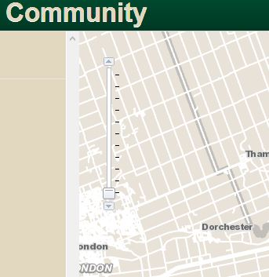You can use any of the following methods to navigate the map:
{kind=link}
- Use can use the “+” and “-“ buttons to adjust your zoom level.
- Roll your mouse roller to zoom in/out.
- Hold down the shift key and drag a box on the map to zoom in.
- Hold your right mouse button down and drag your curser to pan about the map.
Browsing Features
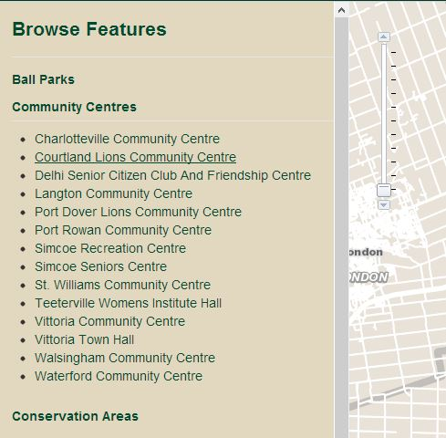Click on the feature name to display all the individual features in the map. Now click on the desired feature to have the map zoom to that feature.
{kind=link}
Feature Information
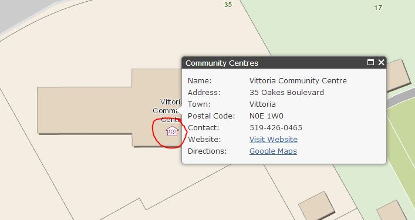Click on the feature itself to display it’s information, links and directions.
{kind=link}
Searching
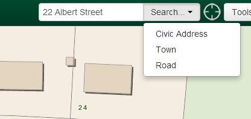The search box can be used to find Civic Addresses, Roads and Towns. Type your search into the box and then click on the Search button and select your type of search. Please note that apostrophes do not work with a search.
{kind=link}
Search results will appear in the top left corner of the application. Click on the search result to zoom into your feature.
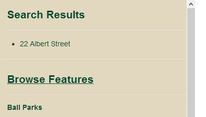{kind=link}
Current Location

To find your current location, click on the Current location button, it will use your computer’s IP address to locate you on the map.
Tools
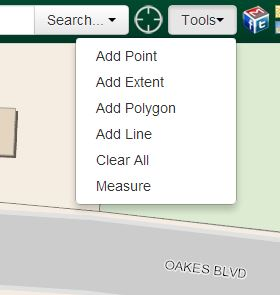{kind=link}
Add Point
Under the Tools menu, ch3ck on Add Point. Then click anywhere on the map to add a point which will appear as a small red flag.
Add Extent
Under the Tools menu, click on Add Extent. Then click and hold down and drag your box to the desired location and then let go to finish.
Add Polygon
Under the Tools menu, click on Add Polygon. Then begin to create your polygon by clicking or adding points around it. Double click to finish your polygon.
Add Line
Under the Tools menu, click and drag a line to the desired location and then let go to finish.
Clear All
Click Clear All to remove all graphics from your map.
Measure
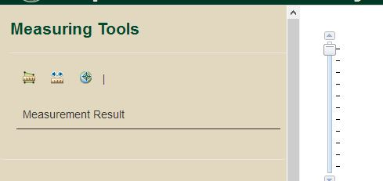When you click on the Measure option it will display the Measuring Tools on the left side of the screen. You can then use the measuring tools to find the length of a line, measure the area of a polygon or find the coordinates of a defined location. To measure a line or polygon, click on the desired tool button and start clicking along your line or polygon, then double click to end your measurement. To find a coordinate, click on the tool button and then to the desired location and the coordinate will be displayed.
{kind=link}
Social Media
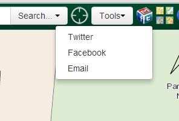Share your map with others by clicking on the Social Media tool button. From here you can go to Twitter, Facebook or Email.
{kind=link}
Base Maps
Base Maps are the geographical information that provide the background to the mapping application. This application contains 3 different base maps which can be changed using this tool by clicking on the Base Maps button.
Community Base Map
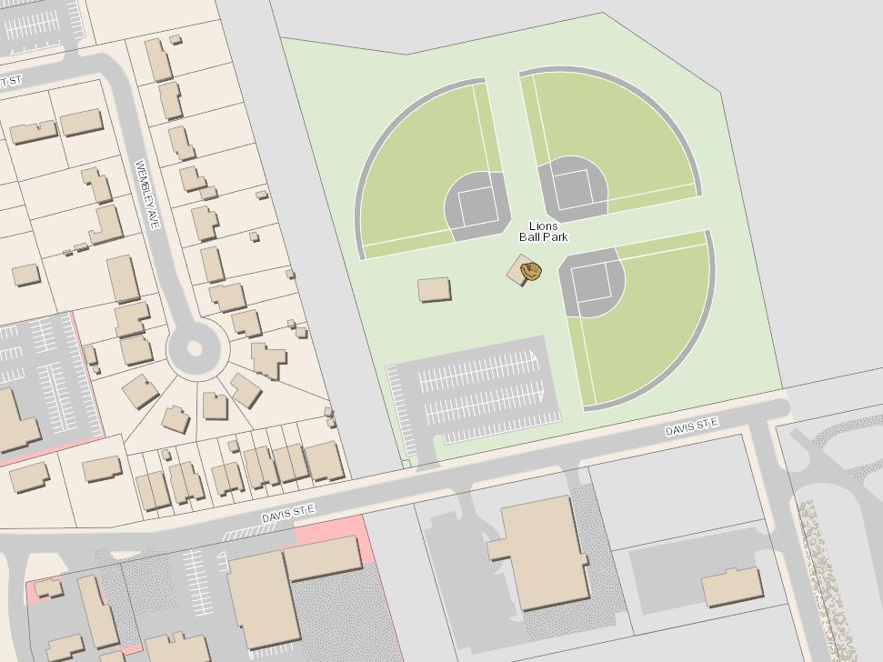This base map contains detailed information including, streets, property lines, buildings, schools, woodlots, sports fields and parking.
{kind=link}
Street Base Map
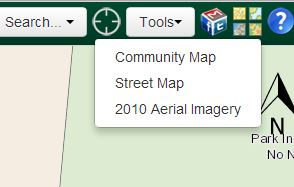This base map is a basic road map showing streets, property lines, parks and schools.
{kind=link}
2010 Aerial Imagery Base Map
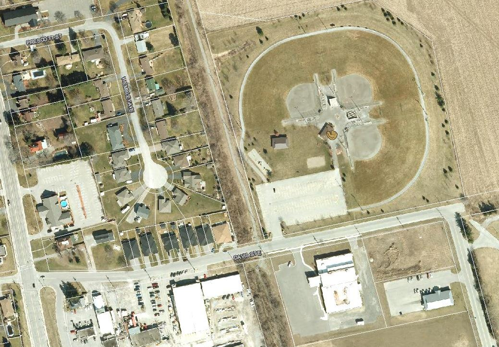This base map contains the 2010 air photography, property lines and street names.
{kind=link}